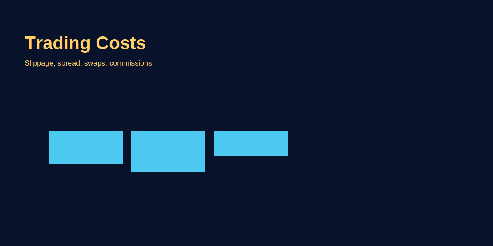

Trading Costs Explained
Problem-based introduction
Costs eat returns. Traders often underestimate spread, commission, swap and slippage. This article explains each cost component clearly and shows how to estimate them for GOLD trades.
Trading Costs kya hain aur kyun matter karte?
Forex trading me 4 main cost components hain: (1) Spread (bid-ask difference), (2) Commission (per-trade fee), (3) Swap/Rollover (overnight holding cost/credit), aur (4) Slippage (execution difference). Beginners often sirf spread dekhte aur baki ignore karte—result: strategy profitable lag raha backtest me, but live trading me break-even ya loss kyunki hidden costs edge kha jate hain. Example: Agar tumhari average profit per trade 10 pips hai but total costs 8 pips (spread 3 + commission 2 + slippage 3), toh net edge sirf 2 pips—ek bad streak immediate wipe kar degi.
Professional traders har trade ki "all-in cost" calculate karte pre-trade: spread visible hai (bid-ask), commission known (broker fee schedule), slippage estimate karte (historical data), swap check karte (agar overnight hold). Yeh total cost ko target se compare karte—agar 20-pip target hai aur cost 5 pips, toh 25% cost ratio (acceptable). Agar 10-pip target aur 5-pip cost, 50% ratio (unsustainable—strategy fail hoga long-term). Rule: Cost-to-target ratio 10-20% max rakho for sustainable edge.
Cost Component 1: Spread (Immediate Hidden Tax)
Spread = Ask Price - Bid Price. Jab tum buy order dete, ask price pay karte (higher). Jab sell karte, bid price receive karte (lower). Difference broker ka markup hai—tumhara immediate cost. Example: GOLD bid 2640.00, ask 2640.30 = 3-pip spread (30 points). Agar tum 0.1 lot buy karo aur instantly sell, $3 loss hoga (0 market move, pure spread cost).
Fixed vs Variable Spread:
- Fixed spread: Market makers offer—consistent (e.g., EUR/USD always 2 pips), predictable cost. Drawback: Usually wider than variable (2-3 pips vs 0.5-1.5 variable average). News events me bhi fixed (advantage).
- Variable spread: ECN brokers—market-driven, tightest during high liquidity (London-NY 0.5-1 pip EUR/USD), widens in thin times (Asian rollover 3-5 pips) aur news spikes (10-20 pips NFP ke time). Average karne pe often better than fixed, but unpredictable.
Spread Cost Calculation (GOLD Example):
- Spread: 3 pips (30 points)
- Position: 0.1 lot GOLD (1 point = $0.10)
- Cost: 30 points × $0.10 = $3 per round-trip (entry + exit dono me spread pay kiya, ek taraf ka $1.50, dono taraf $3)
- 10 trades monthly: $30 spread cost
- 100 trades: $300 spread cost (capital drain if not compensated by profit)
Practical insight: Scalpers ko spread critical hai (5-10 pip targets me 2-3 pip spread = 30-50% profit erosion). Swing traders ko less impact (100-pip target me 3-pip spread = 3%). Strategy ke hisaab se broker choose karo—scalpers ECN with raw spreads, swing traders standard fixed bhi manage kar sakte.
Cost Component 2: Commission (Transparent Fee)
Commission per-trade fee hai jo ECN/STP brokers charge karte (raw spread account me). Typical: $3-$7 per lot per side (round-trip $6-$14). Example: $5 per side commission = $10 total for 1 lot round-trip (buy + sell). Advantage: Transparent—directly visible, no hidden markup. Spread tighter hota (raw interbank spread 0.5 pip EUR/USD), but commission add karo total cost ke liye.
Spread-Only vs Commission Model Comparison (EUR/USD 1 Lot):
- Spread-only broker: 2-pip fixed spread, no commission = $20 cost (1 pip EUR/USD = $10 for 1 lot).
- ECN broker: 0.5-pip raw spread + $7 commission per side = $5 spread + $14 commission = $19 total cost.
- Result: ECN marginally cheaper ($19 vs $20), but real advantage visibility me hai—commission itemized, spread manipulation nahi ho sakta.
GOLD Commission Example:
- Broker commission: $5 per 1 lot per side
- Trade: 0.1 lot GOLD
- Commission: $5 × 0.1 × 2 (round-trip) = $1
- Spread: 2 pips (20 points) = 20 × $0.10 = $2
- Total cost: $3 per trade ($1 commission + $2 spread)
When commission model better? Agar tum high-frequency trader (30+ trades monthly) ya scalper ho, ECN raw spread + commission better—cumulative savings significant (5-10% cost reduction). Agar swing trader (5-10 trades monthly), spread-only simpler (no invoice tracking, straightforward P&L).
Cost Component 3: Swap/Rollover (Overnight Holding Cost)
Swap = overnight financing charge ya credit. Jab position 5 PM EST (3:30 AM IST) cross karta, broker interest rate differential apply karta currency pairs pe. Positive swap = credit milta, negative swap = charge hota. Depends on interest rate differential between two currencies in pair.
Swap Calculation Logic: Agar long EUR/USD ho aur Eurozone interest rate 4%, US rate 5%, toh tum high-yielding currency (USD) pay kar rahe aur low-yielding (EUR) hold kar rahe—negative swap (charge). Reverse me (short EUR/USD) positive swap hota (rare in current environment). GOLD me swap usually negative dono sides (long/short) kyunki storage aur financing costs.
GOLD Swap Example (Real Broker Data):
- Long GOLD: -$2.50 per lot per night
- Short GOLD: -$1.80 per lot per night
- Position: 0.1 lot GOLD, hold 5 days
- Swap cost: -$2.50 × 0.1 × 5 = -$1.25
- Agar trade profit $20 tha, net profit $18.75 (swap ne $1.25 kha liya)
Triple Swap (Wednesday): Wednesday-Thursday rollover me triple swap charge hota (weekend ke 2 days count hote). Agar normal swap -$2.50, Wednesday ko -$7.50 charge hoga. Swing traders avoid karte Wednesday hold (ya Wednesday afternoon close kar dete).
Swap-Free Accounts: Some brokers offer Islamic/swap-free accounts (Sharia-compliant, no interest). Drawback: Hidden costs—wider spreads ya additional administrative fees. Agar tumhare positions long-term hold hote (weeks), swap-free explore karo; intraday traders ko irrelevant.
Cost Component 4: Slippage (Hidden Execution Tax)
Slippage already detailed hai [liquidity-and-slippage article me], but quick recap: expected price vs actual fill ka difference. Market orders me common, especially volatile times (news) ya low liquidity (Asian rollover). Average slippage: 1-2 pips normal conditions, 5-20 pips news events.
Slippage Cost Impact (Monthly):
- Trades: 20 per month
- Average slippage: 2 pips per trade (entry + exit = 4 pips total)
- Position: 0.1 lot GOLD (1 pip = $1)
- Monthly slippage cost: 4 pips × $1 × 20 = $80
- Annually: $960 (significant drain if edge tight)
Slippage reduce karne ke strategies: Limit orders use, high liquidity sessions trade, news avoid, position size control—yeh sab [liquidity-and-slippage article] me covered.
Total Cost Calculation: Real Trade Example (GOLD Swing)
Scenario: GOLD swing trade, 0.1 lot position, hold 7 days, target 100 points ($100 profit).
Cost Breakdown:
1. Spread: 3 pips (30 points) = $3
2. Commission: $1 (ECN broker, $5/lot × 0.1 × 2 sides)
3. Slippage: 2 pips average (entry + exit) = $2
4. Swap: -$2.50/night × 0.1 lot × 7 days = -$1.75 (includes 1 Wednesday triple swap approximately)
Total Cost: $3 + $1 + $2 + $1.75 = $7.75
Net P&L:
- Target hit: $100 profit - $7.75 cost = $92.25 net profit
- Cost % of profit: 7.75% (acceptable for swing trade)
- Break-even requirement: 7.75 points movement (vs 0 in no-cost world)—entry se 7.75 points favor me jana chahiye to break-even.
Yeh calculation har trade ke liye mentally karo. Agar costs 20-30% profit kha rahe, strategy unsustainable hai—either reduce trading frequency (fewer trades = less cumulative cost) ya improve execution (tighter spreads, less slippage).
Hidden Costs: Withdrawal Fees, Inactivity, Currency Conversion
Direct trading costs ke alawa broker-level hidden costs bhi hain:
1. Withdrawal Fees: Bank wire withdrawals $20-$50 per transaction. Solution: Batch withdrawals (monthly instead of weekly), use e-wallets (Skrill/Neteller cheaper, $1-$5 fees).
2. Inactivity Fees: Agar 3-6 months no trading, some brokers $10-$15/month charge karte. Solution: At least 1 micro trade quarterly (0.01 lot) to keep account active.
3. Currency Conversion: Agar account USD me but deposit INR se, conversion markup 1-2% hota. $1000 deposit = $20 instant loss. Solution: USD account maintain karo, international transfers use (Wise, PayPal business).
Yeh "invisible" costs long-term significant hain—$100/year easy loss ho sakta agar careless. Journal me track karo annual brokerage costs separately.
Cost Optimization Strategies
Strategy 1: Broker Comparison (Real Execution Data)
Demo accounts 2-3 brokers pe parallel kholke 20 trades simultaneously execute karo. Track karo: actual spread received, slippage average, commission charges. Best execution wala live me use karo. Marketing claims ignore—real data trust karo.
Strategy 2: Trade Frequency Reduce (Selective Trading)
Agar 50 trades monthly lete aur $5 average cost per trade, $250/month spend. Agar quality filter lagake 25 trades high-probability tak reduce, $125/month cost aur win-rate bhi improve (selective = better setups). Overtrading costs double marta hai—quantity + quality loss.
Strategy 3: Session Timing Optimize
London-NY overlap (5:30-9:30 PM IST) me trade—spreads tight, slippage minimal. Asian rollover (1-5 AM) avoid—spreads 2-3x wide, slippage high. Simple timing shift 30-40% cost reduce kar sakti monthly.
Strategy 4: Position Sizing Consistency
Agar constantly position size vary karte (0.05 to 0.3 lot random), cost tracking mushkil. Fixed position size (e.g., 0.1 lot standard) use karo initially—cost predictable, journal analysis easy.
Image-based examples (mandatory)
Common Mistakes
- Swap ignore karna multi-day trades me: 5-day swing trade plan kiya, swap cost $5-$10 ho gaya—profit $20 tha, net $10-$15 (50% erosion). Swap pre-calculate nahi kiya.
- Advertised spread ko real spread samajhna: Broker advertises "0.5 pip EUR/USD", demo test kiya toh 1.5-2 pips received (off-hours ya B-book widening). Marketing vs reality gap.
- Slippage ko "bad luck" samajhna: Repeatedly news events me market orders dete, 10-20 pip slippage complain karte. Pattern nahi dekhte—timing issue, not broker scam.
- Commission model misunderstand karna: ECN broker dekha "0.1 pip spread", thought "cheapest"—commission $7/lot ignore kiya. Total cost actually higher than spread-only broker.
- Cost-to-target ratio ignore: 10-pip scalping targets with 5-pip total cost (50% ratio)—mathematically unsustainable. Strategy "edge" nahi, cost drain.
- Withdrawal fees repeat karna: Weekly $25 wire withdrawals—$100/month fees ($1200/year). Batching nahi kiya.
Pro Tips
- Cost journal separately maintain: Trading journal me alag column: Spread cost, Commission, Slippage, Swap. Monthly sum karo—agar $200+ cost recurring hai aur profit $300, net $100 (cost 67% kha raha). Broker/strategy optimize karo.
- Break-even calculator use: Pre-trade calculate: "Kitne pips move chahiye break-even ke liye?" Spread 3 + slippage 2 + commission 1 pip equivalent = 6 pips. Target 20 pips hai toh realistic (30% cost), 8 pips hai toh risky (75% cost).
- Demo real-cost simulation: Demo account me fake "cost deduction" manually karo journal me. Agar demo profit $500, real-world costs estimate karke $400 record karo. Realistic expectation set hoga live transition me.
- Broker fee schedule screenshot: Commission, swap rates, withdrawal fees—sab screenshot save karo trading plan folder me. Quarterly review—koi hidden charge increase hua toh detect karo early.
- Wednesday swap awareness: Agar Wednesday evening (IST 3-4 AM Thursday) position open hai, close karne consider karo before triple swap. Agar long-term hold zaroori, accept the cost (factor in expectancy).
- Volume rebate negotiate: Agar consistent 50+ lots monthly trade karte, broker se volume rebate negotiate karo (0.5-1 pip cashback). Large accounts ke liye significant ($50-$100/month savings).
Risk Warning
Costs vary by broker and market conditions; always verify and include them in trade planning.
SEO FAQs
- 1. Trading costs kaise calculate karein accurately?
- Formula: Spread + Commission + Slippage + Swap (if overnight). Example GOLD 0.1 lot: Spread $3 (3 pips) + Commission $1 + Slippage $2 + Swap $1.75 (7 days) = $7.75 total. Target se subtract karke net profit nikalo.
- 2. Spread aur commission me difference?
- Spread = bid-ask markup (hidden cost, baked into price). Commission = transparent per-trade fee (ECN brokers). Spread-only brokers: wider spreads, no commission. ECN: tight spreads + commission. Total cost compare karo, not just spread.
- 3. Swap charges kaise calculate hote hain?
- Interest rate differential between two currencies (ya GOLD storage cost). Broker dashboard me swap rates visible (per lot per night). Negative swap = charge, positive = credit. Wednesday triple swap (weekend count). Swap-free accounts alternative (but hidden costs check karo).
- 4. Slippage kaise track karein monthly?
- Journal me har trade: Planned entry price vs Actual fill. Difference = slippage. Monthly average: Total slippage pips ÷ number of trades. Agar 5+ pips consistent, broker ya timing optimize karo. Target: 1-2 pips average.
- 5. Kaunsa broker model cost-effective: spread-only ya commission?
- Depends on frequency. Scalpers/high-frequency: ECN commission model (raw spreads $0.5-1 pip + $5-7 commission = cheaper cumulative). Swing traders: Spread-only simpler (5-10 trades monthly me difference negligible).
- 6. Cost-to-target ratio kitna hona chahiye?
- Ideal: 10-20% max. Example: 20-pip target, cost 3 pips = 15% (sustainable). 10-pip target, cost 5 pips = 50% (unsustainable—strategy fail). Formula: (Total Cost ÷ Target) × 100. Agar 25%+, strategy/broker optimize karo.
- 7. Hidden costs kya hain aur kaise avoid karein?
- Withdrawal fees ($20-50 per wire), inactivity fees ($10-15/month after 3-6 months no trade), currency conversion markup (1-2%). Solution: Batch withdrawals (monthly), quarterly 0.01 lot trade (activity maintain), USD account use.
- 8. Swap cost zyada hai—kya swap-free account better?
- Agar positions weeks hold karte aur swap -$50-100/month, swap-free explore karo (Islamic accounts). But check: wider spreads ya administrative fees hidden costs ban sakte. Intraday traders ko irrelevant (no overnight hold).